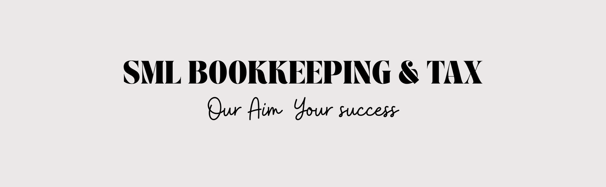

BUSINESS MONEY HEALTH CHECKTurn a business that can't run without you into an asset — not another job you've given yourself.
SML is a licensed accounting practice in Melbourne. We do the books, like everyone else — but the work that matters is different: making sure the business keeps running when you step away.
10 quick questions, 3 minutes. Get a score out of 100 — and see exactly which of the 4 areas to fix first.
Where will your business land?
Who owes you money, how fast invoices go out, who chases them.
How current your books are, where receipts live, business vs personal.
BAS without the panic, and whether anyone plans your tax before June 30.
Do you know what actually makes money — and is anyone telling you?
Enter your details to unlock your full score breakdown on the next screen.
We'll email you your report. No spam, no sharing your details — ever. SML Bookkeeping & Tax.
This check is general information, not financial or tax advice. Scores are indicative, based on your answers. Figures described are typical ranges observed in small businesses generally, not a prediction for your business. SML Bookkeeping & Tax.